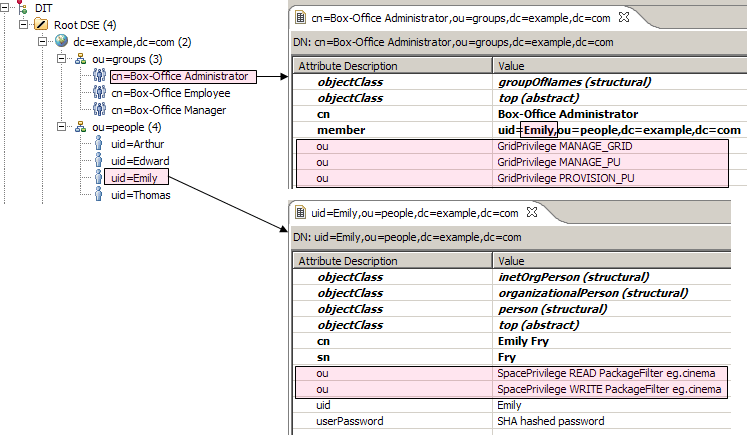

Section Summary: Using LDAP (Lightweight Directory Access Protocol) with Spring Security
Introduction
LDAP is often used by organizations as a central repository for user information and as an authentication service. It can also be used to store the role information for application users.
You should be familiar with LDAP before trying to use it with Spring Security. There are some concepts involved in setting up an LDAP server. To get you started you can take a look at a free LDAP server OpenLDAP, or the Apache Directory Project ApacheDS which also comes with a convenient browser.
LDAP Data Interchange Format (LDIF)
The LDAP Data Interchange Format (LDIF) is a standard data interchange format for representing LDAP directory content. Here is a snippet of an ldif that demonstrates how users and groups are associated with GigaSpaces granted authorities.
Consider for example our "Box-Office Employee"s: Edward, Arthur, and Thomas. They have been granted privileges to list all movies and their available seats, and to reserve a seat. More specifically, granted READ privileges for class eg.cinema.Movie and for class eg.cinema.Seat, and WRITE privileges to update a eg.cinema.Seat as reserved.
... dn: cn=Box-Office Employee,ou=groups,dc=example,dc=com objectclass: top objectclass: groupOfNames cn: Box-Office Employee member: uid=Edward,ou=people,dc=example,dc=com member: uid=Arthur,ou=people,dc=example,dc=com member: uid=Thomas,ou=people,dc=example,dc=com ou: SpacePrivilege READ ClassFilter eg.cinema.Movie ou: SpacePrivilege READ ClassFilter eg.cinema.Seat ou: SpacePrivilege WRITE ClassFilter eg.cinema.Seat ... dn: uid=Edward,ou=people,dc=example,dc=com objectclass: top objectclass: person objectclass: organizationalPerson objectclass: inetOrgPerson cn: Edward Jones sn: Jones uid: Edward userPassword: koala ... |
|

Configure Spring to use an LDAP Server
Spring Security supports authentication against LDAP through LdapAuthenticationProvider, an authentication provider that knows how to check user credentials against and LDAP repository.
<bean id="ldapAuthenticationProvider" class="org.springframework.security.ldap.authentication.LdapAuthenticationProvider"> <!-- strategy for handling the actual authentication against the LDAP repository --> <constructor-arg ref="authenticator" /> <!-- strategy for retrieving a user's set of granted authorities --> <constructor-arg ref="populator" /> </bean>
| An LDAP Spring Security configuration file can be found under <GigaSpaces root>/config/security/ldap-security-config.xml |
Authenticating with LDAP binding
Spring Security comes with an LdapAuthenticator implementation called BindAuthenticator. Bindauthenticator uses an LDAP bind operator to bind as a user to the LDAP server. This approach relies on the LDAP server to authenticate the user's credentials.
<bean id="authenticator" class="org.springframework.security.ldap.authentication.BindAuthenticator"> <constructor-arg ref="contextSource" /> <!-- how to find a user in LDAP --> <property name="userDnPatterns"> <list> <!-- {0} servers as a pattern argument placeholder for a username --> <value>uid={0},ou=people</value> </list> </property> </bean> <bean id="contextSource" class="org.springframework.security.ldap.DefaultSpringSecurityContextSource"> <constructor-arg value="ldap://localhost:10389/dc=example,dc=com" /> </bean>
The userDnPatterns property is used to tell the authenticator how to find a user in LDAP. In this case we are only using a single DN pattern. For example, if the username is Edward, the DN used to bind to LDAP will be uid=Edward,ou=people relative to the initial context dc=example,dc=com.
Authenticating by comparing passwords
Spring Security also supports authentication by password comparison with PasswordComparisonAuthenticator. PasswordComparisonAuthenticator compares the supplied password with a password attribute (userpassword, by default) in the user record. The password is encoded using the password encoder, by default LdapShaPasswordEncoder.
<bean id="authenticator" class="org.springframework.security.ldap.authentication.PasswordComparisonAuthenticator"> <constructor-arg ref="contextSource" /> ... <property name="passwordAttributeName" value="userpassword" /> <property name="passwordEncoder"> <bean class="org.springframework.security.authentication.encoding.LdapShaPasswordEncoder" /> </property> ...
Unlike BindAuthenticator, PasswordComparisonAuthenticator doesn't bind to LDAP using the user's DN. It is fine if your LDAP provider allows anonymous binding. Otherwise, you will need to provide a userDN and password.
<bean id="contextSource" class="org.springframework.security.ldap.DefaultSpringSecurityContextSource"> <constructor-arg value="ldap://localhost:10389/dc=example,dc=com" /> <property name="userDn" value="cn=manager,dc=example,dc=com" /> <property name="password" value="password" /> </bean>
Declaring the populator
Once the user identity is confirmed, LdapAuthenticationProvider must retrieve a list of the user's granted authorities. Spring Security comes with DefaultLdapAuthoritiesPopulator. Here's how a populator is configured:
<bean id="populator" class="org.springframework.security.ldap.userdetails.DefaultLdapAuthoritiesPopulator"> <constructor-arg ref="contextSource" /> <!-- group based DN - we will be searching for groups in "ou=groups,dc=example,dc=com" --> <constructor-arg value="ou=groups" /> <!-- the name of the attribute that will contain role information (which effectively translates to a user's granted authorities. Default is "cn" --> <property name="groupRoleAttribute" value="ou" /> <!-- case normalization to upper case. Default is true --> <property name="convertToUpperCase" value="false" /> <!-- role prefix to append to the group name. Default is "ROLE_". --> <property name="rolePrefix" value="" /> </bean>
The groupRoleAttribute property specifies the name of the attribute that will contain role information which effectively translate into a user's granted authorities. It defaults to cn, but for our example, we've set it to ou.
 Notice that the convertToUpperCase and rolePrefix are different than the defaults. The granted authorities should be returned as-is, without any conversion. For example, the authority SpacePrivilege READ ClassFilter eg.cinema.Movie should not be converted to upper case, nor should it be prefixed with a role prefix "ROLE_".
Notice that the convertToUpperCase and rolePrefix are different than the defaults. The granted authorities should be returned as-is, without any conversion. For example, the authority SpacePrivilege READ ClassFilter eg.cinema.Movie should not be converted to upper case, nor should it be prefixed with a role prefix "ROLE_".
Configured this way, the DefaultLdapAuthoritiesPopulator will retrieve all groups (roles) that the user is a member of - that is, all groups that have a member attribute with the user's DN.
Additional Roles
The DefaultLdapAuthoritiesPopulator allows us to obtain any additional roles for the given user (on top of those obtained from the standard search implemented by this class). This is done by overriding getAdditionalRoles to return the extra roles which will be merged with those returned by the group search.
Take for example Emily, our "Box-Office Administrator" which needs extra authorities which are not part of the "Box-Office Administrator" role. We would like to be able to grant specific authorities on top of the user record, as illustrated below:
